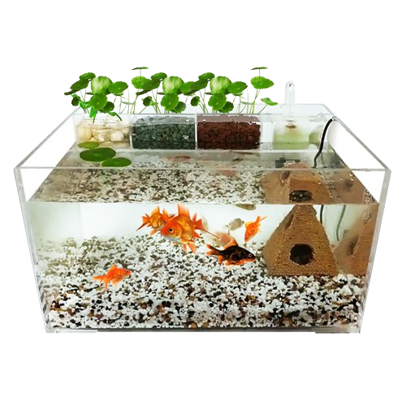
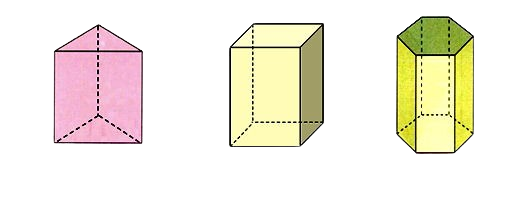
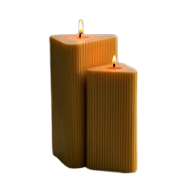
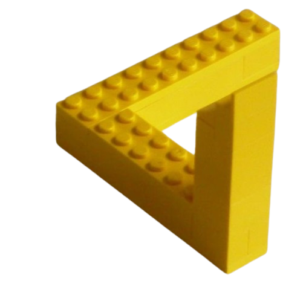

Volumen práctico
¿Alguna vez has llenado una pecera?, Si la pecera es un prisma rectangular, puedes calcular fácilmente cuánta agua necesitas para llenarla multiplicando el área de la base por la altura. ¡Así tus peces tendrán un hogar cómodo!
Formas de las bases
Los prismas pueden tener bases de diferentes formas, como cuadrados, rectángulos, triángulos, pentágonos, hexágonos, ¡incluso círculos! ¿Sabías que un cilindro es técnicamente un tipo especial de prisma?
Cálculos prácticos
Si estás diseñando una vela con forma de prisma triangular, puedes calcular cuánta cera necesitas para hacerla fácilmente multiplicando el área de la base por la altura y dividiendo por dos (ya que la vela tiene una forma triangular, solo necesitas la mitad del volumen de un prisma rectangular).
En el arte
Los artistas a menudo representan prismas en sus obras para jugar con la luz y las sombras. Los prismas pueden descomponer la luz en sus colores del arcoíris, ¡creando efectos visuales impresionantes!

Decoración creativa
Imagina que estás decorando una caja para regalo. Si esa caja tiene forma de prisma rectangular, para calcular la cantidad de papel de regalo que necesitas, simplemente mides el área de las dos bases y la suma de las áreas de las caras laterales. ¡Así podrás envolverla perfectamente!

Juegos divertidos
¿Alguna vez has jugado con bloques de construcción? Muchos de estos bloques tienen forma de prisma, lo que los hace fáciles de apilar y crear estructuras interesantes.
